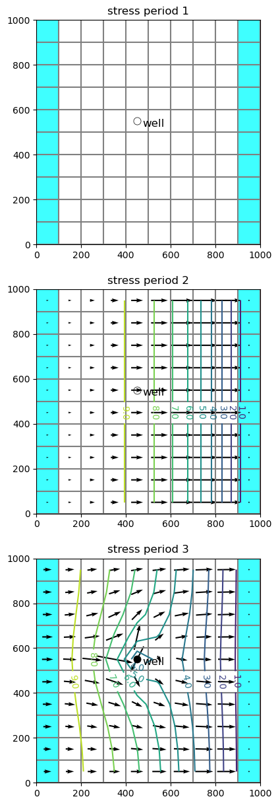
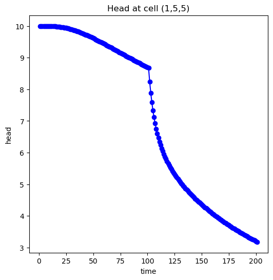

Note
MODFLOW Tutorial 2: Unconfined Transient Flow Model
In this example, we will convert the tutorial 1 model into an unconfined, transient flow model with time varying boundaries. Instead of using constant heads for the left and right boundaries (by setting ibound to -1), we will use general head boundaries. We will have the model consider the following conditions:
Initial conditions – head is 10.0 everywhere
Period 1 (1 day) – steady state with left and right GHB stage = 10.
Period 2 (100 days) – left GHB with stage = 10., right GHB with stage set to 0.
Period 3 (100 days) – pumping well at model center with rate = -500., left and right GHB = 10., and 0.
We will start with selected model commands from the previous tutorial.
[1]:
# ## Getting Started
#
# As shown in the previous MODFLOW tutorial, import flopy.
from pathlib import Path
from tempfile import TemporaryDirectory
[2]:
import numpy as np
[3]:
import flopy
Creating the MODFLOW Model
Define the Model Extent, Grid Resolution, and Characteristics
Assign the model information
[4]:
Lx = 1000.0
Ly = 1000.0
ztop = 10.0
zbot = -50.0
nlay = 1
nrow = 10
ncol = 10
delr = Lx / ncol
delc = Ly / nrow
delv = (ztop - zbot) / nlay
botm = np.linspace(ztop, zbot, nlay + 1)
hk = 1.0
vka = 1.0
sy = 0.1
ss = 1.0e-4
laytyp = 1
Variables for the BAS package Note that changes from the MODFLOW tutorial 1
[5]:
ibound = np.ones((nlay, nrow, ncol), dtype=np.int32)
strt = 10.0 * np.ones((nlay, nrow, ncol), dtype=np.float32)
Define the Stress Periods
To create a model with multiple stress periods, we need to define nper, perlen, nstp, and steady. This is done in the following block in a manner that allows us to pass these variable directly to the discretization object:
[6]:
nper = 3
perlen = [1, 100, 100]
nstp = [1, 100, 100]
steady = [True, False, False]
Create Time-Invariant Flopy Objects
With this information, we can now create the static flopy objects that do not change with time:
[7]:
temp_dir = TemporaryDirectory()
workspace = temp_dir.name
name = "tutorial02_mf"
mf = flopy.modflow.Modflow(name, exe_name="mf2005", model_ws=workspace)
dis = flopy.modflow.ModflowDis(
mf,
nlay,
nrow,
ncol,
delr=delr,
delc=delc,
top=ztop,
botm=botm[1:],
nper=nper,
perlen=perlen,
nstp=nstp,
steady=steady,
)
bas = flopy.modflow.ModflowBas(mf, ibound=ibound, strt=strt)
lpf = flopy.modflow.ModflowLpf(
mf, hk=hk, vka=vka, sy=sy, ss=ss, laytyp=laytyp, ipakcb=53
)
pcg = flopy.modflow.ModflowPcg(mf)
Transient General-Head Boundary Package
At this point, our model is ready to add our transient boundary packages. First, we will create the GHB object, which is of the following type: flopy.modflow.ModflowGhb().
The key to creating Flopy transient boundary packages is recognizing that the boundary data is stored in a dictionary with key values equal to the zero-based stress period number and values equal to the boundary conditions for that stress period. For a GHB the values can be a two-dimensional nested list of [layer, row, column, stage, conductance].
[8]:
stageleft = 10.0
stageright = 10.0
bound_sp1 = []
for il in range(nlay):
condleft = hk * (stageleft - zbot) * delc
condright = hk * (stageright - zbot) * delc
for ir in range(nrow):
bound_sp1.append([il, ir, 0, stageleft, condleft])
bound_sp1.append([il, ir, ncol - 1, stageright, condright])
print("Adding ", len(bound_sp1), "GHBs for stress period 1.")
Adding 20 GHBs for stress period 1.
[9]:
# Make list for stress period 2
stageleft = 10.0
stageright = 0.0
condleft = hk * (stageleft - zbot) * delc
condright = hk * (stageright - zbot) * delc
bound_sp2 = []
for il in range(nlay):
for ir in range(nrow):
bound_sp2.append([il, ir, 0, stageleft, condleft])
bound_sp2.append([il, ir, ncol - 1, stageright, condright])
print("Adding ", len(bound_sp2), "GHBs for stress period 2.")
Adding 20 GHBs for stress period 2.
[10]:
# We do not need to add a dictionary entry for stress period 3.
# Flopy will automatically take the list from stress period 2 and apply it
# to the end of the simulation
stress_period_data = {0: bound_sp1, 1: bound_sp2}
[11]:
# Create the flopy ghb object
ghb = flopy.modflow.ModflowGhb(mf, stress_period_data=stress_period_data)
Transient Well Package
Now we can create the well package object, which is of the type, flopy.modflow.ModflowWel().
[12]:
# Create the well package
# Remember to use zero-based layer, row, column indices!
pumping_rate = -500.0
wel_sp1 = [[0, nrow / 2 - 1, ncol / 2 - 1, 0.0]]
wel_sp2 = [[0, nrow / 2 - 1, ncol / 2 - 1, 0.0]]
wel_sp3 = [[0, nrow / 2 - 1, ncol / 2 - 1, pumping_rate]]
stress_period_data = {0: wel_sp1, 1: wel_sp2, 2: wel_sp3}
wel = flopy.modflow.ModflowWel(mf, stress_period_data=stress_period_data)
Output Control
Here we create the output control package object, which is of the type flopy.modflow.ModflowOc().
[13]:
stress_period_data = {}
for kper in range(nper):
for kstp in range(nstp[kper]):
stress_period_data[(kper, kstp)] = [
"save head",
"save drawdown",
"save budget",
"print head",
"print budget",
]
oc = flopy.modflow.ModflowOc(
mf, stress_period_data=stress_period_data, compact=True
)
Running the Model
Run the model with the run_model method, which returns a success flag and the stream of output. With run_model, we have some finer control, that allows us to suppress the output.
[14]:
# Write the model input files
mf.write_input()
[15]:
# Run the model
success, mfoutput = mf.run_model(silent=True, pause=False)
assert success, "MODFLOW did not terminate normally."
Post-Processing the Results
Once again, we can read heads from the MODFLOW binary output file, using the flopy.utils.binaryfile() module. Included with the HeadFile object are several methods that we will use here:
get_times()will return a list of times contained in the binary head fileget_data()will return a three-dimensional head array for the specified timeget_ts()will return a time series array[ntimes, headval]for the specified cell
Using these methods, we can create head plots and hydrographs from the model results.
[16]:
# Imports
import matplotlib.pyplot as plt
[17]:
import flopy.utils.binaryfile as bf
[18]:
# Create the headfile and budget file objects
headobj = bf.HeadFile(Path(workspace) / f"{name}.hds")
times = headobj.get_times()
cbb = bf.CellBudgetFile(Path(workspace) / f"{name}.cbc")
[19]:
# Setup contour parameters
levels = np.linspace(0, 10, 11)
extent = (delr / 2.0, Lx - delr / 2.0, delc / 2.0, Ly - delc / 2.0)
print("Levels: ", levels)
print("Extent: ", extent)
Levels: [ 0. 1. 2. 3. 4. 5. 6. 7. 8. 9. 10.]
Extent: (50.0, 950.0, 50.0, 950.0)
[20]:
# Well point for plotting
wpt = (450.0, 550.0)
Create a figure with maps for three times
[21]:
# Make the plots
fig = plt.figure(figsize=(5, 15))
mytimes = [1.0, 101.0, 201.0]
for iplot, time in enumerate(mytimes):
print("*****Processing time: ", time)
head = headobj.get_data(totim=time)
# Print statistics
print("Head statistics")
print(" min: ", head.min())
print(" max: ", head.max())
print(" std: ", head.std())
# Extract flow right face and flow front face
frf = cbb.get_data(text="FLOW RIGHT FACE", totim=time)[0]
fff = cbb.get_data(text="FLOW FRONT FACE", totim=time)[0]
# Create a map for this time
ax = fig.add_subplot(len(mytimes), 1, iplot + 1, aspect="equal")
ax.set_title(f"stress period {iplot + 1}")
pmv = flopy.plot.PlotMapView(model=mf, layer=0, ax=ax)
qm = pmv.plot_ibound()
lc = pmv.plot_grid()
qm = pmv.plot_bc("GHB", alpha=0.5)
if head.min() != head.max():
cs = pmv.contour_array(head, levels=levels)
plt.clabel(cs, inline=1, fontsize=10, fmt="%1.1f")
quiver = pmv.plot_vector(frf, fff)
mfc = "None"
if (iplot + 1) == len(mytimes):
mfc = "black"
ax.plot(
wpt[0],
wpt[1],
lw=0,
marker="o",
markersize=8,
markeredgewidth=0.5,
markeredgecolor="black",
markerfacecolor=mfc,
zorder=9,
)
ax.text(wpt[0] + 25, wpt[1] - 25, "well", size=12, zorder=12)
*****Processing time: 1.0
Head statistics
min: 10.0
max: 10.0
std: 0.0
*****Processing time: 101.0
Head statistics
min: 0.025931068
max: 9.998436
std: 3.2574987
*****Processing time: 201.0
Head statistics
min: 0.016297927
max: 9.994038
std: 3.1544707

Create a hydrograph
[22]:
# Plot the head versus time
idx = (0, int(nrow / 2) - 1, int(ncol / 2) - 1)
ts = headobj.get_ts(idx)
fig = plt.figure(figsize=(6, 6))
ax = fig.add_subplot(1, 1, 1)
ttl = f"Head at cell ({idx[0] + 1},{idx[1] + 1},{idx[2] + 1})"
ax.set_title(ttl)
ax.set_xlabel("time")
ax.set_ylabel("head")
ax.plot(ts[:, 0], ts[:, 1], "bo-")
[22]:
[<matplotlib.lines.Line2D at 0x7f6566321300>]

[23]:
try:
temp_dir.cleanup()
except:
# prevent windows permission error
pass